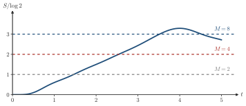
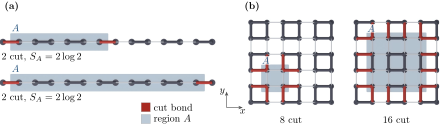

Advanced Quantum Materials 2027 · All lectures · Lecture notes
Session 7. Quantum Many-Body Entanglement and Tensor Networks
7.8b Where MPS stop working
The same argument tells us directly where MPS must fail, which is whenever the true entanglement entropy is larger than what a practical bond dimension can give through (7.10). In practice this happens in four cases. The first case is dynamics over long times, since after a quench the entanglement grows linearly with time and not logarithmically, as Schematic 7.11 shows for a small chain. The second case is systems in more than one dimension. There the length of the boundary in the area law grows with the system size, as we saw in Section 7.7. So \(M\) has to grow too, often exponentially in the linear size of the subsystem. The third case is highly excited states, since the area law is a statement about ground states and not about general eigenstates. The fourth case is, more generally, states far from equilibrium. However, when the physics stays close to a gapped 1D ground state, MPS can be used for more than the ground-state problem. With a higher cost, they can be used for time evolution, excited states and open quantum systems, routinely in 1D and in some cases in 2D.


After a sudden change of the Hamiltonian the entanglement of a chain grows linearly with time. Why is this a problem for an MPS with fixed \(M\)?
Show the answers
- A. ✗ False
This is false. The evolution with a Hamiltonian is unitary, so \(\langle\psi|\psi\rangle=1\) at all times. The norm is not what grows after a quench.
- B. ✗ False
This is false. A quench only changes the parameters. For example \(J=1\) becomes \(J=2\) and the Hamiltonian is still a sum of nearest-neighbor terms.
- C. ✓ True
This is true. The bound (7.10) gives \(S\le\log M\), and a linear growth of \(S\) needs \(M\sim e^{S}\) to grow exponentially. For this reason long-time dynamics is hard for MPS.
The half-chain entropy after a quench passes each limit \(\log M\) at a finite time.
Which of the following ground states is the hardest for an MPS with a fixed bond dimension?
Show the answers
- A. ✗ False
This is false. The AKLT chain is gapped and its exact ground state is an MPS with \(M=2\), for 100 sites or for 10000. The entropy of a gapped chain saturates.
- B. ✓ True
This is true. An MPS has to pass through the lattice, and its cut crosses a boundary of about ten bonds. The entropy is then ten times the one of a single bond, and the bond dimension that it needs is exponentially larger.
- C. ✗ False
This is false. A product of dimers has a cut that crosses at most one singlet, with entropy \(\log2\) at most. It is an exact MPS with \(M=2\).
Notebook check-in: session7.ipynb, “Entanglement entropy of the ground state” (Core), “Size dependence of the entanglement entropy” (Challenge), and “Bond dimension dependence of the entanglement entropy” (Challenge)
With these three exercises you can reproduce Sections 7.5 to 7.8 numerically. First, you compute the entanglement entropy at each bond for the MPS ground state of a Heisenberg chain. Then you check that it grows very little with the system size, which is the 1D area-law saturation of Section 7.6, but this time in a gapless chain and not in a gapped one. Finally, you check that it saturates once the bond dimension is large enough to satisfy (7.10). The quiz of the first exercise also asks you to replace the model with an Ising model and to see how the entropy changes. This is a quick way to see how the area law responds to a really different ground state, which in this case is classical and has zero entanglement.
Try it. Compare the curves of \(L=10\) and \(L=30\) as a function of maxm. Both curves follow the bound \(\ln\chi\) at small \(\chi\) and then saturate. Which chain saturates at the larger bond dimension, and why?